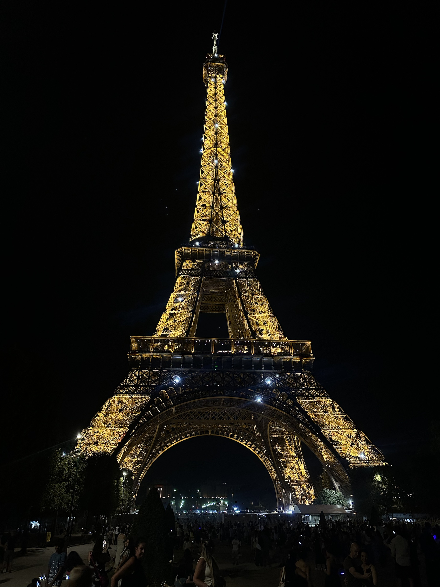
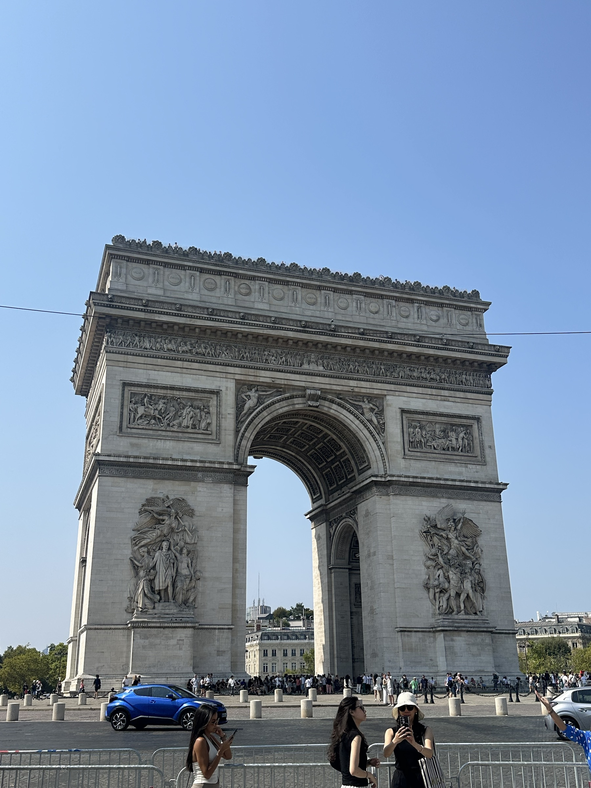
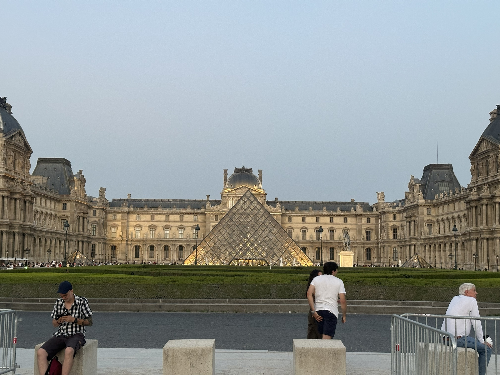
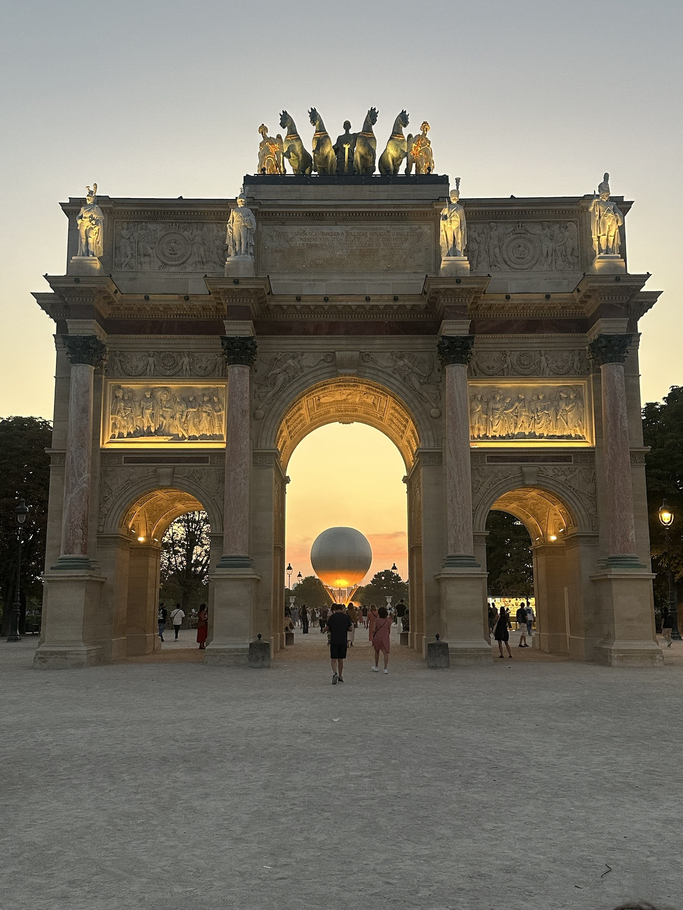
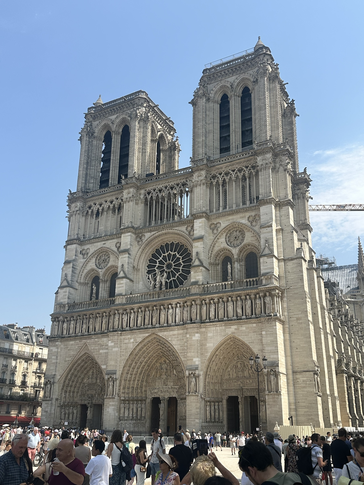
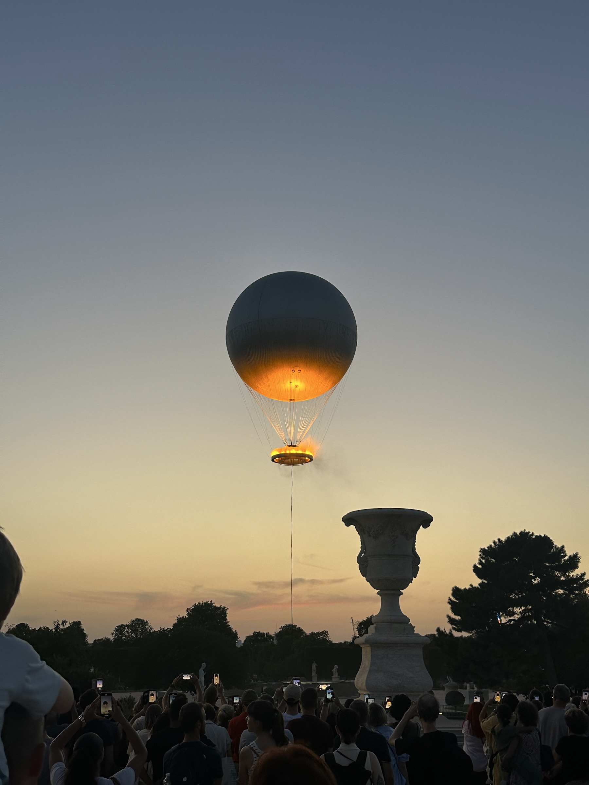

Inicio / Destino 04
Francia
París reúne siglos de historia en un recorrido donde conviven monumentos clásicos, museos y grandes símbolos urbanos.
Postales de Francia
Historia · Monumentos · Museos

Torre Eiffel
La estructura de hierro transforma la noche parisina y continúa siendo el gran símbolo visual de la ciudad.

Arco del Triunfo
Un monumento de escala imponente ubicado en el centro de una de las perspectivas urbanas más reconocidas de París.

Museo del Louvre
El antiguo palacio y la pirámide contemporánea dialogan en un espacio donde épocas distintas se encuentran.

Arcos del Louvre
Las galerías y arcos del palacio enmarcan nuevas vistas y revelan la riqueza ornamental del conjunto.

Notre-Dame
La catedral gótica conserva en su fachada siglos de historia, restauración y memoria de la ciudad.

Antorcha olímpica
Una intervención temporal que sumó una nueva imagen al paisaje histórico de París durante los Juegos Olímpicos.